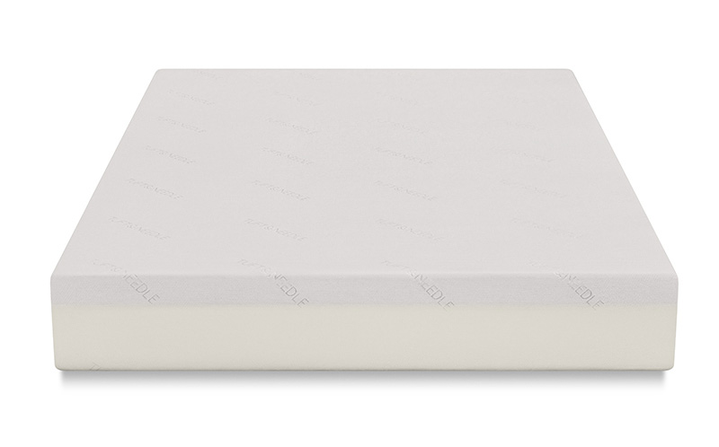
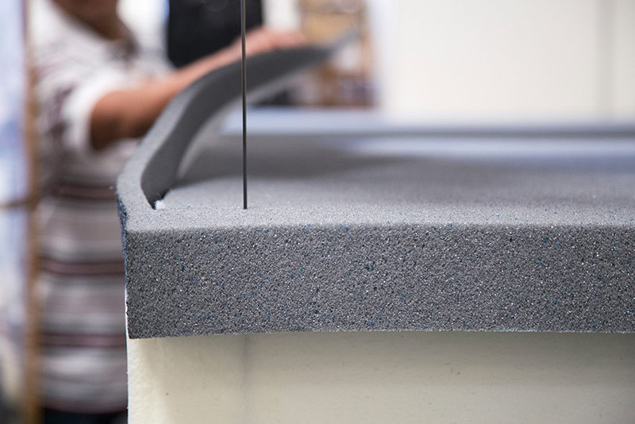
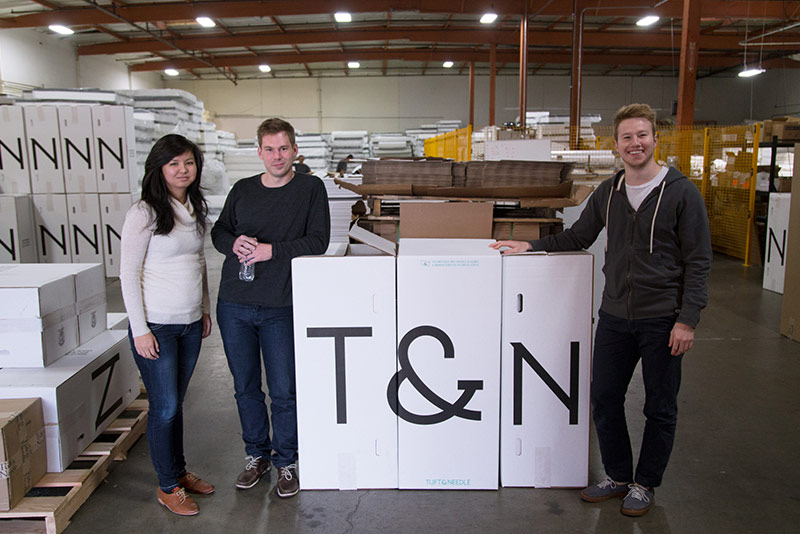

Delivering Comfort & Streamlined Mattress Shopping through Heroku-Powered App
Tuft & Needle produces high-quality mattresses and a hassle-free shopping experience without gimmicks.
Like developing software, ensuring a good night's sleep often depends on your tools. Choosing the right tools for the job — in this case, your mattress — is critical to achieving the best results. However shopping for a new mattress, and finding the one that works best for you, can be a painful experience. Like coding, it may be full of unexpected hurdles, trial and error. And to top it off, the high price point and associated markup on a high-quality product can certainly keep you awake at night. Why can't buying a new mattress be more of a plug n' play experience?
Old-World Meets Tech-World
The founders of Tuft & Needle wanted to address these pain points with a new way of buying a mattress — and a new way of running a mattress company. Both had been software developers in Silicon Valley, and it felt natural to approach this new venture as if they were building software. The company's vision: to create an old-world, hand-crafted product delivered through cutting-edge, hand-crafted technology. All at an affordable price, starting at $250.
First, the team analyzed the consumer mattress shopping, buying, and user experience and developed the key use cases they wanted to solve for. They built a business plan around a customer-centric business model that stripped out layers of markup and offered a premium product at a reasonable price, wrapped in a simple, friendly, online shopping experience.
After extensive R&D, the Tuft & Needle team designed and built a high-quality mattress that can span the soft-to-firm spectrum and satisfy the vast majority of their customer base. As in software development, the team takes an iterative approach to continuously improving their product. In the past year, they've made over 50 minor modifications, such as stitching and zipper enhancements, to a major upgrade of their core foam material.
Redefining "Made in the U.S.A."
Over the past two years, Tuft & Needle has gone from bootstrapped startup to sleeper hit — profitable since it's third month, and now beginning it's third year with 20 employees and a new office with showroom. Headquartered in Phoenix, their mattresses are assembled on the west coast with materials produced on the east coast. Although the founders run a lean operation, a surprising one-quarter of their staff is software developers. This team built the company's entire stack in-house — from eCommerce engine to robust operational backend systems such as CRM, supply chain, inventory management and fulfillment software. This is a major part of the founder's R&D (and business) strategy — continuously innovate and iterate on their business systems in order to increase automation, keep their operations lean, and support an exceptional customer experience.

Choosing a Platform that Never Sleeps - Heroku
The Tuft & Needle founders had been using Heroku since the platform launched, so they had deep experience with the technology and the PaaS approach. Choosing to run their business on Heroku made perfect sense. It allowed the startup to focus their attention and resources on writing code and improving their systems. It also removed the need to hire devops or a sysadmin, helping keep their team lean — an important success factor for a young, bootstrapped company. As they grow, they know that the platform will scale with them.
Heroku has removed the platform as a challenge or a problem. We just don't need to think about it, it's taken care of.
JT Marino, Tuft & Needle Co-Founder
The company's app is primarily built in Ruby and Javascript and connected to Postgres on the backend. They also use RelateIQ, who was recently acquired by Salesforce, to manage their CRM activities.

On Heroku, with only a few commands we've got a server live and we're serving customers.
JT Marino, Tuft & Needle Co-Founder
The team loves how easy it is to use Heroku. They can keep tabs on the traffic, and easily manage any spikes by allocating more dynos when needed. Although there are several developers on the team, the company has trained other staff to manage aspects of their Heroku instance, for example the customer service team makes copy changes and deploy to production when needed. This allows the engineers to focus on more mission-critical tasks and lets other teams implement updates quickly. The ease of using Heroku empowers the whole team.
We have staff who are not software developers making commits and deploying to Heroku which is really cool.
JT Marino, Tuft & Needle Co-Founder

App Experience
Tuft & Needle's primary software focus is on the channel. On the consumer side, they wanted to get the software out of the way so they created a lightweight web front end. The browsing, shopping and purchase experience is almost as easy as flopping down on their mattress after a long workday. Once a customer completes the simple order process, the mattress is shipped and delivered in a rolled, compressed form for easy handling. The company's goal is to make a perfect mattress and the extremely low return rates show they are very close.
Behind the scenes, the company's use of third-party software is minimal. They've built all their own automation tools in-house, such as campaign management, order status, shipping modifications, and label generation. They've integrated with key providers along the supply chain, such as manufacturers or shipping companies like FedEx, giving them a view into the entire end-to-end process and all the associated data points. These data points get folded back into the software iteration process to help further automate operations and improve the customer experience.
With Tuft & Needle's sales volume, you'd expect them to run a much larger team. But the software helps keep them lean, and for a young, bootstrapped company, that's essential.
More Stories


Have a question? Give our sales team a call: +1 (866) 278-1349.